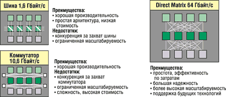
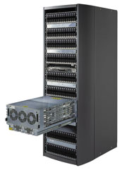
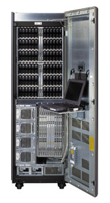
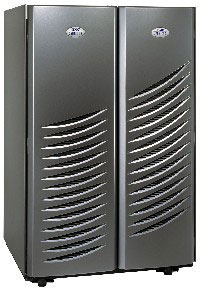

Анатолий Журкин
Многие руководители предприятий до сих пор недооценивают сложность эффективной консолидации. Ресурсы, необходимые серверам с учетом появления новых приложений и роста числа пользователей, постоянно увеличиваются, а физические размеры самих серверов продолжают уменьшаться. Подсистемы хранения, которые подключаются напрямую либо используются в сетевой конфигурации, в том числе и сети хранения данных SAN, и подключаемые системы хранения NAS, теперь обслуживают десятки и даже сотни серверов одновременно. Стабильное и эффективное реагирование на всевозможные потребности систем превращается в крайне сложную задачу. Разработка решения, обеспечивающего консолидацию хранения, для информационной системы конкретного предприятия требует высокой гибкости и мощной операционной среды.
Хотя управление хранением как централизованным сервисом дает много плюсов, консолидирование многих приложений и их нагрузок может привести к непредсказуемым требованиям к производительности. Например, неожиданный всплеск активности одного приложения может негативно повлиять на многие другие операции.
В начале года корпорация ЕМС (http://www.emc.com) представила принципиально новую архитектуру построения своих дисковых массивов. На смену шинной архитектуре семейства Symmetrix 8000 пришла так называемая матрица прямых соединений между всеми компонентами системы (Direct Matrix Architecture, DMX). Новые дисковые массивы построены в архитектуре межсоединений, которая использует до 128 соединений точка-точка между кэш-памятью и фронтальными и тыловыми контроллерами. Анонсируя технологию Symmetrix DMX, корпорация не только представила новую системную архитектуру дисковых массивов старшего класса, но и охарактеризовала их положение в общей структуре предложений EMC. Теперь Symmetrix рассматривается не как изолированное семейство, а как часть общего продуктового ряда с массивами СLARiiON. Для моделей обеих семейств стандартизованы операционная система, управляющее ПО, диски (теперь их только три варианта) и ряд других подсистем. Более того, в семействе Symmetrix впервые появилась модульная система - DMX800, построенная на тех же элементах, что и массивы семейства СLARiiON. Тем самым обеспечивается полная преемственность двух основных продуктовых линеек ЕМС и возможность постепенного наращивания мощностей систем хранения для заказчиков компании.
Эксперты полагают, что руководители ИТ-служб должны рассматривать новую систему хранения корпорации EMC не просто как очередную версию линейки дисковых массивов с многолетней историей. Дело не только в том, что это современная технология, обеспечивающая повышение плотности размещения и производительности, универсальность и дополнительные возможности сокращения расходов; главное - серия Symmetrix DMX с архитектурой Direct Matrix дает возможность руководителям ИТ-служб пересмотреть общую стратегию хранения данных. DMX реализует новые функции консолидации хранения данных, обеспечения непрерывности бизнеса и гибкого управления системами хранения, а ее компоновка позволяет получить масштабирование по доступной цене.
EMC Symmetrix DMX: основные преимущества для бизнесаПропускная способность, плотность размещения портов, масштабируемость по производительности и емкости открывают новые возможности для развертывания технологии в масштабах всего предприятия. Эта новая архитектура систем хранения позволяет реально поддерживать в консолидированной среде значительно более широкий диапазон и масштаб предприятий, что особенно важно для заказчиков, которым нужно быстро перейти на сетевое хранение данных. Руководителям ИТ-служб следует пересмотреть свою стратегию консолидации хранения с учетом новых возможностей, реализованных в Symmetrix DMX. Во всей серии Symmetrix DMX, начиная от полностью модульной модели DMX800 и заканчивая системой DMX2000 класса highend, используется один и тот же набор ПО с мощными функциональными возможностями и опции масштабирования. В ряде случаев можно пересмотреть элементы инфраструктуры хранения данных для обеспечения непрерывности бизнеса и восстановления после аварий. В частности, есть возможность увеличить число приложений, защищенных от аварий, и поддерживаемых онлайновых копий, а также географически распределить удаленные резервные копии. Появление Symmetrix DMX позволит руководителям ИТ-служб в дополнение к администрированию гетерогенных систем хранения, уже давно реализованному EMC, контролировать и затраты на хранение. Новые конфигурации и схемы ценообразования для дисковых приводов, техническая возможность наращивать емкость систем открывают дополнительные возможности сокращения расходов на приобретение и развертывание. |
Объявленная серия систем хранения Symmetrix DMX отличается высокой емкостью и производительностью. Модели серии масштабируются от 1,2 Тбайт до 42 Тбайт по физической емкости. Максимальная пропускная способность кэш-памяти может достигать 16 Гбайт/с. По оценкам специалистов EMC, номинальная пиковая внутренняя полоса пропускания систем Symmetrix DMX составляет 64 Гбайт/с, что намного выше, чем у систем Symmetrix 8000 (1,6 Гбайт/с). Существенно возросла пропускная способность кэш-памяти - от 6,4 до 16 Гбайт/с, а пропускная способность для операций ввода-вывода внутри системы увеличилась с 5,1 до 12,8 Гбайт/с. Использование до 64 петель подключения дисков по интерфейсу Fibre Channel (2 Гбит/с) обеспечивает более высокий параллелизм дисковых операций. Благодаря этому в системах Symmetrix DMX скорость передачи данных в 5-6 раз выше, чем в системах семейства Symmetrix 8000.
Согласно опубликованным результатам эталонных испытаний дисковых массивов Symmetrix DMX, имитирующих рабочую нагрузку хранилища данных, модель Symmetrix DMX2000 выполняет 20 тыс. операций ввода-вывода в секунду (IOPS) при среднем времени отклика немногим более 3,5 мс. Конкурирующие системы такого же класса в тестах показывают результат около 6 тыс. IOPS.
EMC позиционирует Symmetrix DMX как систему, которая:
- основана на современной технологии хранения и в то же время сохраняет базовые черты Symmetrix;
- обеспечивает весьма высокую плотность размещения портов доступа и имеет рекордную производительность;
- реализует многомерную масштабируемость (с масштабированием вверх, вниз и в будущее) пропускной способности, емкости, интерфейсов подключения и производительности;
- построена по модульному принципу, что обеспечивает не только масштабируемость, но и усовершенствование и расширение в будущем.
Посмотрим, что нового появилось в архитектуре Direct Matrix, если сравнивать ее с традиционными решениями на базе общей шины и коммутатора (рис. 1). Применение обычной архитектуры общей шины в определенный момент неизбежно приводит к конфликтам из-за захвата линии и физически ограничивает возможности масштабирования. Коммутируемая архитектура имеет те же недостатки - конфликты из-за захвата линии и ограничения по масштабируемости и, кроме того, задержки при передаче данных. Отказ коммутатора приводит к заметному падению производительности системы. Архитектура же Direct Matrix обеспечивает резервированные соединения типа "точка-точка" напрямую, что устраняет причины конфликтов, реализует масштабируемость и поддержку будущих технологий. Стоит отметить, что архитектурно системы DMX полностью готовы к использованию четырех- и даже десятигигабитного соединения Fibre Channel, а также сводят к минимуму задержки.
|  |
| Рис. 1. Варианты архитектуры дисковых массивов.
|
Концепция новой архитектуры
Хотя концепция архитектуры Direct Matrix не содержит ничего принципиально нового, она позволяет одновременно увеличить пропускную способность системы и производительность и использовать выделенные подключения. Поэтому при росте или нестабильности активности у "тяжелых" приложений не возникает проблем с доступностью системных ресурсов EMC Symmetrix и не требуется специальный арбитраж распределения ресурсов. Обеспечивается предсказуемая и стабильная производительность при различных нагрузках, что является фундаментальным требованием для сред с высокой степенью консолидации.
До сих пор у руководителей ИТ-служб не было свободы выбора при построении инфраструктур, обеспечивающих непрерывность бизнеса и восстановление после аварий: имелись высоконадежные решения для центров обработки данных, с одной стороны, и все остальные варианты - с другой. Например, тяжелые решения, гарантирующие доступность в режиме 7x24x365 с удаленным синхронным зеркалированием, требуют самого совершенного оборудования и ПО из имеющегося на рынке и значительных инвестиций в подготовку площадок, приобретение продуктов и обучение персонала.
Появление систем модульной конструкции (Symmetrix DMX800) позволяет руководителям ИТ-служб обеспечить тот же уровень удаленной защиты данных на площадках, где нет таких критически важных для бизнеса данных, которые оправдали бы, например, инвестиции в устройство фальшпола и другие меры подготовки инфраструктуры, включая обучение персонала. Все новые модели Symmetrix DMX работают под управлением того же набора ПО, который применялся в предыдущем поколении дисковых массивов EMC, включая утилиты SRDF и TimeFinder, поэтому они совместимы не только между собой, но и со старыми моделями Symmetrix.
В новых решениях EMC можно использовать для репликации один и тот же набор утилит и методик и с централизованной консоли контролировать локальную и удаленную среду, управлять ею и автоматизировать. Они помогают реализовать уже накопленный опыт централизованного управления.
Устранение физических ограничений на размещение также позволяет внедрить новые методы управления информацией. Для эффективной работы компании требуется все больше информации, и данные, доступность которых раньше была ограничена из-за локального резервного копирования, теперь можно автоматически реплицировать на альтернативную и лучше защищенную площадку. Такое резервное копирование можно выполнять в определенное время суток или непрерывно. Оно позволяет не только реализовать более привлекательный уровень сервиса, но и удовлетворить жесткие требования законодательства.
Вообще говоря, слово "управление" имеет много значений. С течением времени сформировались правила конфигурирования и приобретения систем хранения данных. Сегодняшние экономические условия заставляют руководителей ИТ-служб и компаний пересматривать приоритеты операций, и зачастую они вынуждены снижать уровень обслуживания, чтобы сделать больше с меньшими затратами либо из-за невозможности удовлетворить ожидания. Эксперты полагают, что Symmetrix DMX воплощают именно ту технологию и реализуют именно те опции обеспечения уровня обслуживания, которые раньше были недоступны.
Многомерное масштабирование архитектуры Symmetrix Direct Matrix позволяет более гибко масштабировать системы хранения корпоративного класса. Предприятия сегодня стараются покупать только то, что им нужно в данный момент. Теперь ИТ-менеджеры и администраторы систем хранения могут точно определить требования к пропускной способности, емкости, возможностям подключения и/или производительности и купить именно те компоненты, которые им нужны. Возможно, впервые в истории систем хранения класса high-end ИТ-отделы смогут привести свои расходы в соответствие с потребностями, потому что будут в состоянии сразу же использовать приобретенное оборудование.
Кроме того, в Symmetrix DMX используются те же жесткие диски, что и в линейке дисковых массивов EMC CLARiiON, благодаря чему предприятия смогут увеличить эффективность затрат и сократить стоимость приобретения. По мере роста требований к хранению они будут приобретать дополнительные диски, цена на которые, скорее всего, будет ниже текущего уровня (сейчас стоимость хранения 1 Гбайт за год уменьшается в среднем на 30%).
Новые продукты EMC в зависимости от требований покупателя можно приобрести и всего с 16 дисками, и с несколькими сотнями накопителей. Еще более важно то, что единая архитектура всей серии Symmetrix Direct Matrix позволяет получить адаптируемую, предсказуемую и устойчивую производительность при любом уровне емкости. Технология Symmetrix DMX реализует линейно масштабируемые системы, обеспечивающие прежде недоступный уровень предсказуемости.
Если необходимо увеличить пропускную способность, в Symmetrix DMX добавляются дополнительные устройства-контроллеры (Channel Director, Disk Director и Global Cache Director). Это выгодно отличает новые дисковые массивы от предыдущих поколений систем корпоративного класса, в которых имелись жесткие ограничения на расширение.
Перечисленные возможности помогают руководителям ИТ-служб лучше планировать приобретения, выполнять их постепенно, оптимизируя использование дорогих ресурсов и не вкладывая деньги в оборудование, которое сначала нельзя будет загрузить на полную мощность, и разрабатывать решения для бизнеса с очень высокой точностью.
Как полагают эксперты, EMC взяла на вооружение следующую стратегию: реализовать первую версию новой технологии и затем постепенно перевести на нее весь спектр своей продукции, обеспечив совместимость сверху вниз и снизу вверх с предыдущим поколением. Именно так EMC успешно вывела на рынок линейку CLARiiON и свое открытое ПО.
Некоторые подробности архитектуры
Технология неблокирующих взаимосоединений в системе Symmetrix DMX полностью исключает конфликты с шиной или коммутатором. По оценке специалистов EMC, Symmetrix DMX обеспечивает вчетверо более широкую полосу пропускания, имеет в пять раз большую вычислительную мощность и в десять раз большую пропускную способность обмена данными с кэш-памятью, чем у ближайших конкурентов.
Архитектура матрицы прямых соединений системы Symmetrix DMX устраняет необходимость в промежуточных контроллерах: объединительная плата обеспечивает совокупность прямых соединений (выделенных физических каналов) типа "точка-точка" между кэш-памятью, внешними (фронтальными) и внутренними (тыловыми) контроллерами и каждым из дисков. В результате ширина совокупной внутренней полосы пропускания возрастает до 64 Гбайт/с. Отказ платы памяти приведет к выходу из строя 16 из 128 каналов, т. е. к уменьшению совокупной полосы пропускания на 12%, тогда как в коммутируемой архитектуре отказавший координатный коммутатор заблокирует 32 канала, снизив ширину совокупной полосы пропускания на 25%.
За счет 128 прямых выделенных трактов передачи данных между контроллерами каналов (Channel Directors) и кэш-памятью удается не снижать производительность работы шин или коммутаторов. Каждый из таких выделенных трактов передачи имеет полосу пропускания 500 Мбайт/с, что в совокупности обеспечивает полосу пропускания всей системы 64 Гбайт/с. Усовершенствованная технология контроллера кэш-памяти, емкость которой достигает 128 Гбайт (в ней можно сконфигурировать до 32 независимых областей), позволяет задействовать до 32 одновременных трактов обмена с кэш-памятью, каждый с пропускной способностью 500 Мбайт/с. При этом совокупная пропускная способность кэш-памяти может дойти до 16 Гбайт/с, что обеспечивает скорость выполнения транзакций, недостижимую ни в одной другой системе хранения информации.
Системы Symmetrix DMX оснащаются процессорами PowerPC 500 МГц, число которых варьируется от 16 до 68. Соединения осуществляются по интерфейсу Fibre Channel с использованием контроллеров ESCON. Программное управление осуществляет операционная система EMC Enginuity, которая отличается мощным арсеналом функциональных средств для управления системами хранения информации, непрерывно тестирующимся и совершенствующимся. На сегодня данная ОС установлена и успешно эксплуатируется более чем у 60 тыс. заказчиков. Она позволяет подключать системы хранения Symmetrix к сотням типов серверов, десяткам версий ОС и программных пакетов управления системами хранения и предоставляет заказчику широкий выбор популярных вариантов сетевых соединений и устройств (от адаптеров главной шины и жестких дисков до коммутаторов и ленточных подсистем). ОС Enginuity также обеспечивает взаимодействие между системами Symmetrix серии DMX и предыдущих поколений.
В архитектуру DMX входит подсистема дисков с интерфейсами Fibre Channel (2 Гбит/с), в которой можно организовать от 16 до 64 дисковых петель (максимум 18 дисков в каждой). Для подключения серверов (их число может превышать 8 тыс.) используются новые 8-портовые контроллеры Fibre Channel 2 Гбит/с и ESCON, которые позволяют установить до 96 канальных соединений с хост-системами.
В одной системе можно комбинировать диски емкостью 73 Гбайт со скоростью вращения 10 тыс. и/или 15 тыс. об./мин, а также диски емкостью 146 Гбайт со скоростью 10 тыс. об./мин. Поддерживаются уровни RAID 0, 1, 10 и Parity Raid (3+1 или 7+1).
Symmetrix DMX может масштабироваться по нескольким измерениям. Применение более быстрых интерфейсов и процессоров, более быстрой кэш-памяти увеличенного объема, большего числа дисков на канал открывает очевидные возможности для разработки в будущем новых продуктов на основе этой архитектуры. Кроме того, можно увеличить число интерфейсов, директоров кэша, установить жесткие диски с большей скоростью или емкостью. Архитектура Direct Matrix позволяет EMC достаточно просто реализовать такие усовершенствования в будущем, причем их внедрение окажет минимальное влияние на работу информационных систем предприятий, где уже используются системы Symmetrix DMX.
Symmetrix DMX800
В современном модельном ряде EMC система DMX800 (рис. 2) занимает место сразу над системами семейства CLARiiON. Это первая модульная, монтируемая в стойку высокопроизводительная и экономичная модель дисковой системы хранения, обладающая функциональными возможностями и преимуществами монолитных систем высшего класса. Она устанавливается в стандартный 19-дюймовый корпус, отвечающий требованиям профессиональной ассоциации NEMA (National Emergency Management Association), благодаря чему заказчик может по мере необходимости гибко изменять конфигурацию системы, наращивать ее емкость и создавать новые соединения.
|  | Рис. 2. EMC Symmetrix DMX800.
|
В конфигурацию системы DMX800 можно включить от 16 до 120 жестких дисков, в последнем случае совокупная емкость (до разбиения на разделы) достигает 17,5 Тбайт. Система оборудована 16 портами Fibre Channel (2 Гбит/с) для подключения дисков, 16 портами Fibre Channel (2 Гбит/с) для ввода-вывода и кэш-памятью емкостью от 4 до 32 Гбайт. Наращивать систему можно или в пределах имеющегося корпуса, или с использованием дополнительного шасси, в который устанавливается нужное число дисков.
Функциональные возможности Symmetrix DMX800, связанные с обеспечением непрерывности ведения бизнеса, были присущи ранее только системам уровня предприятия, устанавливаемым в крупных центрах обработки данных. Теперь такие системы можно экономически эффективно внедрять, например, в региональных офисах компании с распределенной структурой.
Symmetrix DMX1000 и DMX2000
Системы Symmetrix DMX1000 и DMX2000 - это высокопроизводительные, полностью интегрированные конфигурации Symmetrix DMX с одним и двумя отсеками соответственно (рис. 3, 4).
|  |  |
| Рис. 3. EMC Symmetrix DMX1000.
|
Рис. 4. EMC Symmetrix DMX2000.
|
Система DMX1000 вмещает от 48 до 144 дисков (максимальная емкость - 21 Тбайт) и оборудована кэш-памятью емкостью от 4 до 64 Гбайт. В ее конфигурацию может входить от 16 до 48 портов Fibre Channel (2 Гбит/с) для подключения дисков и до 48 каналов ESCON.
Symmetrix DMX2000 имеет увеличенную емкость кэш-памяти и вдвое большую дисковую емкость, обеспечивает большее число соединений. Она вмещает от 96 до 288 дисков (максимальная емкость - 42 Тбайт) и оборудована кэш-памятью емкостью от 8 до 128 Гбайт. В ее конфигурацию может входить от 16 до 96 портов Fibre Channel (2 Гбит/с) для подключения дисков и до 96 каналов ESCON.
Среди всех моделей Symmetrix системы DMX1000 и DMX2000 имеют самую высокую плотность монтажа. Так, на площади одной половой плитки размещаются до 144 жестких дисков. Конфигурации этих сетевых систем оптимизированы для консолидации хранимой информации, доступной большому числу серверов, и способны выдерживать огромную нагрузку, связанную с обработкой транзакций.
Symmetrix DMX1000-P и DMX2000-P
Самым требовательным заказчикам предлагаются системы DMX1000-P и DMX2000-P (как объясняют в компании EMC, индекс "P" означает Performance - производительность). В шкафах эти модели устанавливаются в тех же конфигурациях, что и модели без индекса P, но они обеспечивают более широкую внутреннюю полосу пропускания за счет вдвое большего числа каналов связи с дисками. Если в системах DMX1000 и DMX2000 используются соответственно 16 и 32 канала связи с дисками по интерфейсу Fibre Channel (2 Гбит/с), то в системах DMX1000-P и DMX2000-P таких дисковых каналов соответственно 32 и 64.
Ради надежности работы новых систем компания EMC применила, в частности, тройное резервирование модулей по принципу голосования простым большинством (Triple Module Redundancy with Majority Voting, TMR-MV), обеспечивающее надлежащую работу ключевых компонентов инфраструктуры. Резервирование TMR-MV устраняет возможность образования "единой точки отказа", так как в этом случае нужно, чтобы совпадали сигналы на выходе по меньшей мере двух из трех модулей. Если один из модулей выдает выходной сигнал, не совпадающий с сигналами на выходе двух других модулей тройки, то его выход блокируется, а сам этот модуль маркируется как неисправный. Эти три модуля соединяются с дублированными схемами голосования, которые направляют данные в кэш-память. При выходе из строя одной из схем голосования вторая продолжит направлять выходные сигналы.
Системы хранения Symmetrix DMX1000-P и DMX2000-P обеспечивают очень высокую производительность, необходимую для компьютерных аналитических центров, хранилищ данных и других систем, где происходит интенсивная обработка больших объемов данных на дисках. Обе эти модели оборудованы оптимальным числом контроллеров, каналов и дисков, подключаемых по этим каналам.
В таблице приведены характеристики разных моделей Symmetrix DMX на момент анонса новой серии.
Характеристики систем Symmetrix DMX
| Symmetrix DMX800 | Symmetrix DMX1000 | Symmetrix DMX2000 | |
| Компоновка | Модульная | Интегрированная | Интегрированная |
| Максимальная емкость, Тбайт | 8,76 (диски по 73 Гбайт) 17,5 (диски по 146 Гбайт) |
10,5 (диски по 73 Гбайт) 21,0 (диски по 146 Гбайт) |
21,0 (диски по 73 Гбайт) 42,0 (диски по 146 Гбайт) |
| Интерфейсы (на момент начала поставок): | |||
| Контроллеры Fibre Channel | 16 портов 2 Гбит/с (фиксированная конфигурация) | 16-48 портов 2 Гбит/с | 16-96 портов 2 Гбит/с |
| ESCON | - | 16-48 портов | 16-96 портов |
| Максимальное число дисков | 120 | 144 | 288 |
| Число контроллеров кэш-памяти | 2 (фиксированная конфигурация) | 2-4 | 4-8 |
| Число дисковых резервированных каналов (петли Fibre Channel) | 8 | 8-16 | 16-32 |
| Объем кэш-памяти, Гбайт | 4-32 | 4-64 | 4-128 |
В настоящее время в системе Symmetrix DMX каждый контроллер ввода-вывода использует восемь выделенных каналов матрицы, и это число можно удвоить, не меняя окружающую архитектуру. Емкость кэш-памяти также можно увеличить в четыре раза, доведя до 512 Гбайт (это вчетверо превышает нынешнюю максимальную емкость кэш-памяти модели DMX2000). Наконец, в архитектуре заложена возможность увеличения числа дисков, предел для которого пока установлен в 288 штук.
Специалисты EMC утверждают, что технология Symmetrix DMX - это новый шаг в развитии хранения данных, а не просто очередная версия Symmetrix. В таком случае руководителям ИТ-служб, внедряющим консолидацию систем хранения и более надежный план восстановления после аварий и непрерывности бизнеса, реализующим управление с учетом роста в краткосрочной и долговременной перспективе, следует обратить внимание на эту технологию, как на ее текущую реализацию, так и на развитие в будущем.